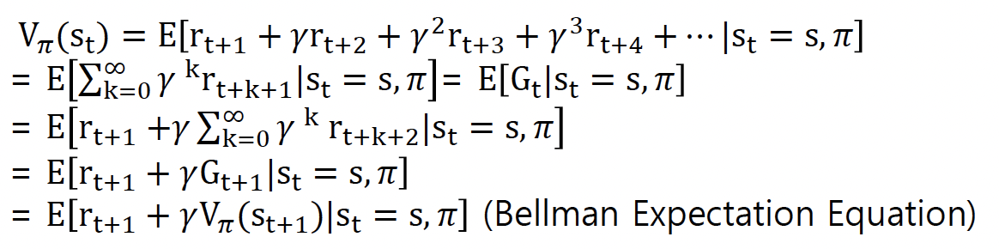

20221206
가치 함수 (value function)
상태 가치 함수 (state value function) \(V_\pi(s)\)
상태 s에서 시작하여 정책 \(\pi\)에 따라 행동을 할 때 얻게 되는 기대 누적 보상 (expected reward summation)

상태-행동 가치 함수 (state-action value function) \(Q_\pi(s, a)\)
상태 s에서 행동 a를 한 다음, 정책 \(\pi\)에 따라 행동을 할 때 얻게 되는 기대 누적 보상

벨만 기대 방정식 (Bellman expectation equation)
상태 가치 함수와 상태-행동 가치 함수의 관계

기대 값이 계산 가능한 형태의 벨만 기대 방정식

최적 정책 (optimal policy)
최적 정책 (optimal policy) \(\pi^*\)과 최적 상태 가치 함수 \(V^*\)
\[ \pi^*(s) = maxV_\pi(s)~or~argmaxQ^*(s, a) \]
Bellman 최적 방정식 (optimality equation)
최적 정책에 따른 가치 함수들이 만족하는 성질
최적 상태 가치 함수
\[ V^*(s) = argmax\sum_{s'}{P_{ss'}^a [r_{ss'}^a + \gamma V^*(s')]} \]
모든 가능한 행동 중에서 가장 큰 기대 누적 보상값을 주는 상태 가치
최적 행동 가치 함수
\[ Q^*(s, a) = \sum_{s'}{P_{ss'}^a [r_{ss'}^a + \gamma V^*(s')]} \]
MDP 동적 프로그래밍 (dynamic programming)
Dynamic programming, DP (동적 프로그래밍)
큰 문제를 작은 문제들로 분할하여 작은 문제의 해결을 통해 큰 문제의 해를 찾는 방법
재귀적 최적화 문제를 해결
정책 반복 (policy iteration)
정책 평가 (policy evaluation)
상태가치함수의 벨만 기대 방정식을 반복적으로 수행
\[ V_{k + 1}(s) = \sum_{a \in A}{\pi(a | s)} \sum_{s' \in S_{t + 1}}{P_{ss'}^a [r_{ss} + \gamma V_k(s'))]} \]
정책 개선 (policy improvement)
벨만 최적 가치 함수를 반복적으로 최대화하는 정책을 결정
\[ \pi^*(s) = max V_\pi(s) \]
가치 반복 (value iteration)
벨만 최적 상태 가치 함수를 반복적으로 계산하는 방법
\[ V_{k + 1}(s) = argmax \sum_{s'}{P_{ss'}^a [r_{ss'}^a + \gamma V_k(s')]} \]
정책 평가 (policy evaluation) \(\pi \to V_\pi\)
주어진 정책 \(\pi\)를 따를 때, 각 상태에서 얻게 되는 기대 보상 값 \(V_\pi\) 계산
\[ V_{k + 1}(s) = \sum_{a}{\pi(s, a)} \sum_{k'}{P_{ss'}^a [r_{ss'}^a + \gamma V_k(s')]} \]
임의의 가치함수 \(V_0\)에서 시작하여, \(V_k\)가 수렴할 때까지 반복

정책 개선 (plicy improvement) \(V_\pi \to \pi\)
상태가치함수 V(s) 값으로부터 정책 \(\pi\) 결정
\[ \pi'(s) = argmaxQ^\pi(s, a) = argmax \sum_{s'}{P_{ss'}^a [r_{ss'}^a + \gamma V^\pi(s')]} \]

정책 반복 (policy iteration) 학습

임의의 정책 \(\pi\)에서 시작하여, \(\pi\)에 대해서 Bellman 방정식이 수렴할 때까지 (즉, 바뀌지 않을 때까지) 적용하여 \(V_\pi\)를 계산하고, \(V_\pi\)를 사용하여 \(\pi\)를 개선하는 과정을 정책 \(\pi\)가 수렴할 때까지 반복

값 반복 (value iteration) 학습
\[ V_{k + 1}(s) = max \sum_{s'}{P_{ss'}^a [r_{ss'}^a + \gamma V_k(s')]} \]
임의의 가치 함수 \(V_0\)에서 시작하여 정책은 계산하지 않고 가치 함수가 수렴할 때까지 반복
수렴한 가치함수 V를 사용하여 정책 \(\pi\)를 결정

강화학습 기초
정책 반복, 가치 반복 학습 알고리즘 (동적 프로그래밍)
정확한 MDP 모델이 필요 (상태 천이 확률 \(P_{ss'}^ar_{ss'}\))
실제 상황에서는 정확한 MDP 모델을 모르는 경우가 많음
강화 학습의 특징
완전한 상태 천이 확률과 보상 함수를 미리 알 수 없음
상태 집합이 무한함, 강화학습을 적용하는 대부분의 문제들은 상태가 연속적이라 상태의 수가 큼
Model-based vs. Model-free
MDP에서 이 상태 천이 확률과 보상 함수를 모델(model)이라 함
Model-based 강화학습
MDP에서 상태 천이 확률과 보상함수를 정할 수 있는 경우
Model-based로 풀 수 있는 문제는 매우 제한적
MDP와 동적 프로그래밍이 model-based에 해당
Model-free 강화학습
행동 공간이 적고 미리 상태 천이 확률과 보상 함수를 알고 있는 경우
대부분의 강화학습 기법들은 model-free임
bootstrap (부트스트랩)
다음 상태에 대한 가치 함수 값으로 현재 상태의 가치 함수 값을 예측하는 방식
에피소드 (episode)
강화학습에서 종료 상태 (terminal state)까지의 상태 천이가 진행된 일렬의 데이터
부트스트랩을 사용하면 에피소드가 진행되는 동안에 상태 가치 함수를 업데이트 할 수 있음
On-policy vs. Off-policy
On-policy 강화학습은 학습에 사용한 경험을 정책이 업데이트되면 이 경험들을 학습에 사용할 수 없음
데이터 사용 효율 관점에서 off-policy가 좋음
On-policy
행동을 결정하는 정책 (policy)과 학습할 정책이 같은 강화학습
Off-policy
행동하는 정책과 학습하는 정책이 다른 방법
탐색 (exploitation)과 탐험 (exploration)
exploitation (탐색)
현 상태에서 알고 있는 한 가장 최적의 행동을 선택하는 것
탐욕(greedy)적으로 행동을 선택
탐험 (exploration)
다양한 경험을 쌓기 위해 무작위 행동을 선택
탐욕적으로만 행동을 선택하다 보면 정작 정말 최적인 행동을 전혀 선택하지 못할 수도 있음
몬테카를로 학습 (Monte-Carlo learning, MC)
Monte-Carlo prediction (몬테카를로 예측)
샘플링을 통해 상태 가치 함수를 학습
충분한 에피소드 (episode, a sample)를 거치고 나면 상태 가치 함수가 정답에 가까워 짐
\[ V_{n + 1}(s) = \frac{1}{n}\sum_{i = 1}^n{G_i} = \frac{1}{n}(G_n + \sum_{i = 1}^{n - 1}{G_i}) = \frac{1}{n}(G_n + (n - 1) \frac{1}{n - 1}\sum_{i = 1}^{n - 1}{G_i}) = \frac{1}{n}(G_n + (n - 1)V_n(s)) = V_n(s) + \frac{1}{n}(G_n - V_n(s)) \]
이전 상태 가치 함수와 새로운 획득 보상과의 차를 더해 상태 가치 함수를 업데이트 함
\(G_n - V_n(s)\): 오차 (error)
1/n을 \(\alpha\)로 치환하여 학습 속도 (learning rate)로 여김 →
\[ V_{n + 1}(s) = V_n(s) + \alpha(G_n - V_n(s)) \]
총 획득 보상 G는 에피소드가 끝나야 알 수 있음
몬테카를로 제어
상태가치 함수 대신 행동가치 함수를 사용
\[ Q_{n + 1}(s, a) = Q(s, a) + \alpha(G_n - Q_n(s, a)) \]
시간차 학습 (temporal-difference learning, TD)
시간차 예측
\[ V(S_t) = V(S_t) + \alpha (R_t - V(S_t)) \gets G_n = r_{t + 1} + \gamma V(S_{t + 1}) = V(S_t) + \alpha (r_{t + 1} + \gamma V(S_{t + 1}) - V(S_t)) \]
몬테카를로 예측과 다르게 매 시간마다 가치 함수를 갱신할 수 있음
다음 상태 가치로 가치 함수를 갱신함으로 TD는 부트스트랩 알고리즘
SARSA (State-Action-Reward-State-Action) 강화학습
On-policy 시간차 제어 (on-policy temporal-difference control)
정책 결정
Greedy method (탐욕 방법)
- 현재 상태에서 가장 큰 행동 가치함수 값을 주는 행동을 선택
\[ \pi(s) = argmax Q(s, a) \]
\(\epsilon\)-greedy method
- \(1 - \epsilon\)의 확률로는 탐욕방법처럼 수행하고, \(\epsilon\)의 확률로는 무작위로 행동을 선택
정책 결정으로부터 샘플 (s, a, r, s’, a’)를 구성해서 Q를 계산함
\[ Q(s, a) = Q(s, a) + \alpha(r + \gamma Q(s' + a') - Q(s, a)) \]
다음 상태 s’에서 가장 큰 Q값을 이용하여 Q함수를 갱신
Q-learning 알고리즘과 DQN (Deep Q-network) 강화학습
현재 상태 s에서 \(\epsilon\)-greedy 방법을 적용함으로써 현재 상태 s에서 행동 a를 실행하여 보상 r을 받고, 다음 상태 s’를 결정하여, 샘플 (s, a, r, s’)를 구성
Bellman 최적 방정식을 이용하여 Q(s, a)를 갱신함
\[ Q(s, a) = Q(s, a) + \alpha (r + \gamma argmax Q(s', a') - Q(s, a)) \]
- Q함수를 갱신하기 위해 다음 상태 s’에서의 행동 a’를 결정하는 정책을 최대로 하는 행동 a’, 실제로 다음 상태로 가서 하는 행동을 결정하는 정책이 다름 (off-policy 정책)
여기서, Q함수를 심층신경망을 사용하면 DQN (Deep Q-network)이 됨

강화학습 알고리즘
몬테카를로 방법 (Monte Carlo method)
시간 차이 학습 (temporal difference learning, TD-learning)
정책 그레디언트 알고리즘 (policy gradient algorithm)
- 연속구간 행동을 갖는 강화학습
역강화 학습 (inverse reinforcement learning)
보상함수가 직접적으로 제공되지 않는 경우 적용
전문가의 바람직한 행동 시연이 가능한 상황
시연을 관측한 데이터로부터 보상함수를 학습 → 보상함수를 사용하여 가치함수를 학습하고 정책 결정
상태 s에 대한 전형적인 보상함수 R(s)의 표현
- 상태 s의 특징 \(\phi_i(s)\)들에 대한 선형결합 표현
\[ R(s) = \sum_{i = 1}^N{\omega_i \phi_i(s)} \]